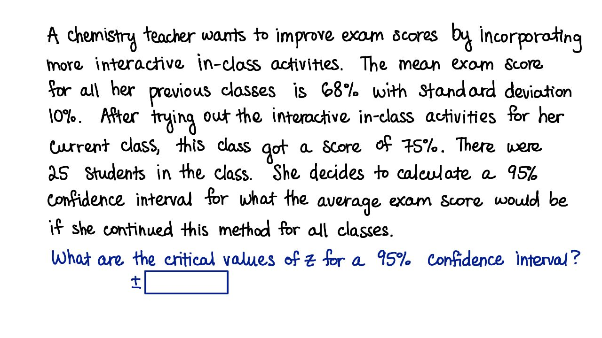

习题集 8a：估计
Back to Home
01. 1. 点估计值
02. 2. 更大范围
03. 3. 增大样本量
04. 4. 增大总体标准偏差
05. 6. 95% 置信区间的临界值
06. 7. 标准误差
07. 8. 概率
08. 9. 误差范围
09. 10. 95% 置信区间
10. 11. 解读置信区间
Back to Home
05. 6. 95% 置信区间的临界值
95% 置信区间的临界值
Start Quiz:

INSTRUCTOR NOTE:
一名化学老师希望通过在课堂上引入更多互动性的教学活动，来提高学生的成绩。之前，她教的班级的平均分为 68%，标准偏差为 10%。在对她现在教的班级引入互动活动后，平均分提高到 75%。班上有 25 名学生。她想计算出，如果她对其他所有班级都引入互动活动，目标平均分的 95% 置信区间。
对于 95% 置信区间，临界 Z 值是多少？
Z-表格链接
Next Concept